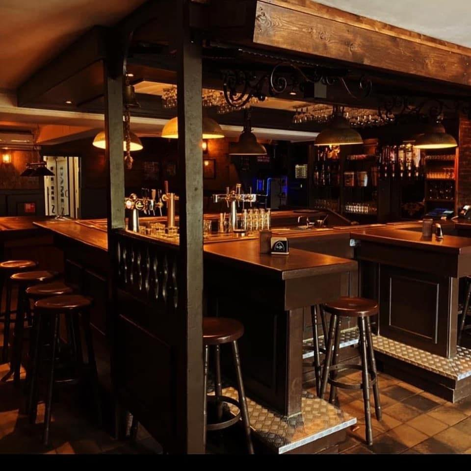
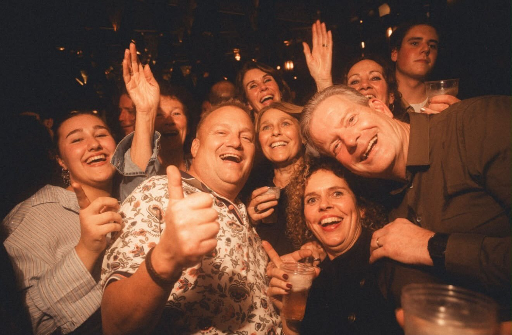
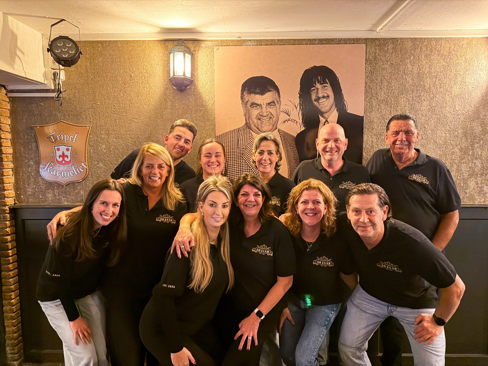

50 jaar verhalen, feest en gezelligheid
Het café aan de Haverdijk in Prinsenbeek. Sinds 1976 de plek waar generaties samenkomen, voor een biertje aan de bar, live muziek of carnaval.
sinds 2019 met Mike en Kim Renne
Wat je bij De Stee vindt
Een echt Brabants café: binnenlopen, een biertje bestellen en blijven hangen.
Aan de bar
Bier van de tap, Tripel Karmeliet en een goed gesprek aan de bar.
Live muziek
Al 50 jaar treden er bands en artiesten op in het café.
Carnaval
Tijdens carnaval in Boemeldonck staat De Stee op z'n kop.
Darts
Gooi een pijltje op het bord in het café.

Feest in De Stee
Een volle zaterdagavond met een DJ, een band die live speelt of samen klassiekers meezingen. In De Stee wordt al 50 jaar gefeest.
Wat er de komende weken op het programma staat, zie je in onze agenda op Instagram. Wil je iets vragen of met een groep komen? Stuur ons een WhatsApp.
Bekijk de agenda op Instagram →50 jaar De Stee
Op 5 november 1976 ging De Stee open. Van D'n Willem en zijn zoon Wim, via Richard naar Mike en Kim: het gevoel is altijd hetzelfde gebleven. Een plek waar je je thuis voelt, waar vriendschappen ontstaan en waar generaties samenkomen.
De Stee is een begrip. De Stee is een haven. De Stee zijn jullie, zijn wij.
Richard van den Berg, kastelein van 2003 tot 2019

Mike en Kim Renne
Sinds 2019 staan broer en zus Mike en Kim Renne achter de bar. Het cirkeltje is rond: in de tijd van D'n Willem stonden hun ouders Frans en Anja hier ook al te tappen.
Samen met een vast team houden ze De Stee wat het altijd was: een café voor iedereen uit Prinsenbeek en omgeving.
Kom langs of stuur een bericht
Loop gewoon binnen aan de Haverdijk 14, of stuur ons een WhatsApp als je iets wilt vragen.
Café Bar De Stee
Openingstijden
- Ma en di
- Gesloten
- Wo en do
- 19.00 - 01.00
- Vr en za
- 15.00 - 02.00
- Zondag
- 14.00 - 00.00